Welcome
Mid-ting
Meeting
Teibi
Te ibi (te/ˈi.biː/)
See you there. (latin)
Teibi
(te/ˈi.biː/)
Teibi will help you find the ideal "meet me half way" ...
... and provide a list 📜 of locations to choose 🚂 from.
Quick Demo...
Free to use
- publicly accessible app, no registration neccessary
--> provided random alias as a guest
Registration
- allows for verification/personalization:
- signed in users have verified icons
--> future dev considerations: preselection/quick select, history, personal colour scheme, etc.
Database
- user database utilizing noSQL MongoDB with the help of Mongoose ODM (object data modeling library)
- authentication user model using passport.js
--> bcryptjs used to hash passwords
Passport.js
- authentication middleware for node.js programs
- purpose of authenticating user requests while using app
- passport will maintain persistent login sessions
- local strategy: traditional username + password
Multi-User App Using Socket.IO
- Socket.IO is a javascript library for realtime web applications
- enables realtime, bi-directional communication between web clients (users) and servers
--> two parts: a client-side library that runs in the browser, and a server-side library for Node.js
Multi-User App
- user alias/username and status transmitted through Socket.IO server
- user and their status authenticated on the client-side and emitted to the Socket server
--> Socket server holds the data and emits back to all existing associated users/clients
Log Out
- log out option is only available for user who are signed in (authenticated request)
--> end user session --> refreshes the app and generates anonymous alias and creates new room
Leaflet API
- Javascript library
- Easy to customize elements (i.e., map, marker, and controller)
- Open source tiles available

Make a Keynote presentation using HTML
WebSlides is an open source framework for building HTML presentations, landings, and portfolios.
.bg-apple
HTML presentations can be easy
Features
-
→ Simple Navigation
with arrow keys and swipe. -
Permalinks
Go to a specific slide. -
Slide Counter
Current/Total number -
40+ Beautiful Components
Covers, cards, quotes... -
Vertical Rhythm
Use multiples of 8. -
500+ SVG Icons
Font Awesome Kit.
WebSlides was made to inspire people.
WebSlides is a wonderful way to showcase your company. All content is for demo purposes only. Images are property of their respective owners.


Map API
- Both user select a latitude and longtitude.
- Socket.io communicates between client and server.
- The map API takes in the lantitude and longtitude and calculate the mid point.
- The mid point will be passed to the Yelp API.
API / Options
Yelp API
Get a list of location based on a location with a radius
if (dataResult.total > 0) {
res.json(dataResult);
} else {
radius += 30;
setTimeout(function() {
getLocations();
}, 500);
}
Other Options
-
🏙 Open Data sets
City specific locations (🌳, 🪑) -
✏ Preferences
User options, prefered places
Socket-IO Chat
Once connection has been established, socket instance is utilized to listen/emit event messages. The messages are instantly rendered on both.
We don't store any user data, so there is no backend storage for the messages.Previously sent messages just won’t be visible to any new pages.
Socket-IO Chat
-
→ Server-side
- emit()
- Takes the event you want called and what you want to send with it, like a username and message.
- on()
- When we get the `chat message` event, we emit new event to client to render the new message along with the username. So, while only one client called the event, both users on the server will get the message.
-
→ Client-side
- Once the chat form is submitted.
- We send the object containing message to server.
- This is object is then sent back to clients on `chat message` event i.e emit.
Make a Keynote presentation using HTML
WebSlides is an open source framework for building HTML presentations, landings, and portfolios.
.bg-apple
Make a Keynote presentation using HTML
WebSlides is an open source framework for building HTML presentations, landings, and portfolios.
.bg-apple
Material-ui
-
→ Open source framework
Started in 2014 -
Implements Google’s Material Design specification Material Design
Material Design
-
React components
Easy to modularize -
56+ Cool components
Dialogs, Swipeable Views, Tooltips, Progress and more! -
Not super easy to customize
Components are structured with CSS-API -
Create your own theme
Color, spacing, z-index, and more!